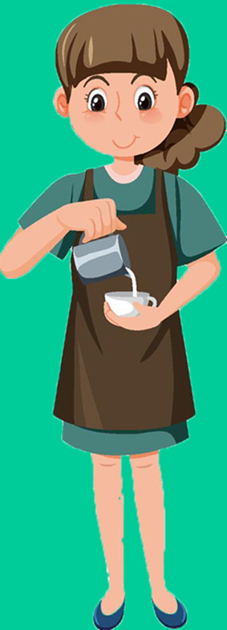
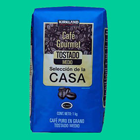

Siempre habia soñado con tener mi propio restaurante. Desde que era niña, me cautivaba la idea de crear un lugar donde las personas pudieran reunirse, disfrutar de deliciosas comidas y crear recuerdos inolvidables juntos. A lo largo de los años, he trabajado arduamente en la industria gastronómica, perfeccionando mis habilidades culinarias y aprendiendo todo lo que puedo sobre la administración de un negocio de alimentos. Cada experiencia en una cocina, cada plato servido, cada cliente satisfecho me acercaba un paso más a mi meta final: abrir mi propio restaurante. Finalmente, llegó el día en el que tomé la valiente decisión de dar el gran paso y cumplir mi sueño. El proceso de preparación fue largo y demandante, pero cada obstáculo superado solo reafirmaba mi determinación y mi pasión por la gastronomía.
Y cuando por fin abrí las puertas de mi restaurante, sentí una mezcla de emoción y nerviosismo. Pero al ver las sonrisas de satisfacción en los rostros de mis primeros clientes, su elogio por la comida y el ambiente acogedor que había creado, supe que todo el esfuerzo había valido la pena. Desde entonces, mi restaurante se ha convertido en un lugar emblemático en la comunidad, donde la gente acude para disfrutar de deliciosos platillos, celebrar ocasiones especiales y crear momentos memorables. Cada día me levanto con una sensación de gratitud y orgullo por haber tenido la valentía de perseguir mi sueño y convertirlo en una realidad.
Abrir un restaurante ha sido la mejor decisión que he tomado en mi vida, porque me ha permitido combinar mi pasión por la comida con mi deseo de crear experiencias significativas para los demás. Y aunque el camino no siempre ha sido fácil, no cambiaría nada de esta maravillosa aventura en la que me he embarcado. ¡Atrévete a seguir tus sueños y verás cómo se convierten en realidad!

|
 |
|
|
|  |